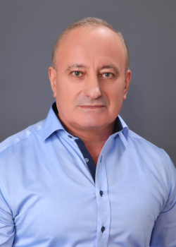
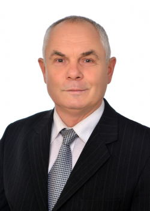
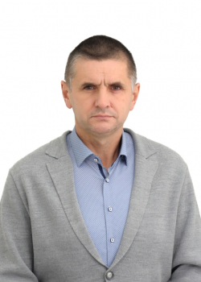

Зварювання та споріднені технології
Головна
Робоча група
Компетентності
Компоненти
Схема
Звіти
Інформація про програму
Робоча група освітньої програми

Шлапак Любомир
Професор кафедри будівництва
Біщак Роман
Доцент кафедри будівництва

Панчук Мирослав
Доцент кафедри будівництва

Матвієнків Олег
Доцент кафедри будівництва